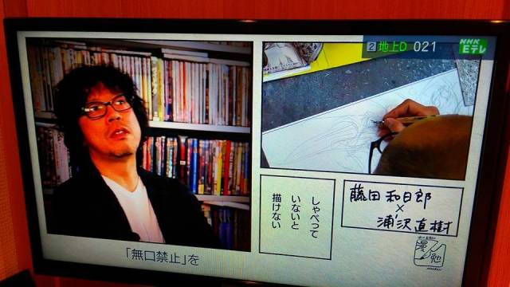
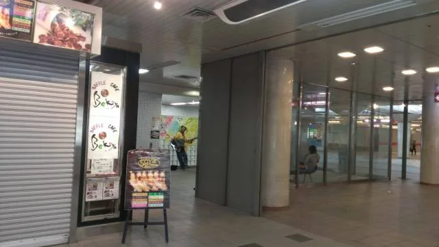
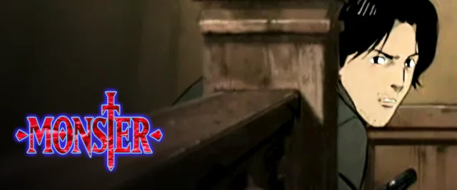

開著電視漫無目的滑著選單，本來只是想找個配菜隨便看看，游標晃過去，目光冷不防被釘在《MONSTER》。
開著電視漫無目的滑著選單，本來只是想找個配菜隨便看看，游標晃過去，目光冷不防被釘在《MONSTER》。
漫畫早就在書櫃裡翻過不知道多少次，但第一集點下去，片頭音樂響起、手術刀反光的那一瞬間，心跳竟然還是像看新故事一樣，慢慢整個沉了下去。
📌 浦澤直樹的冷冽與浪漫：以兩德統一後的歐陸為舞台的《MONSTER》（1994–2001），由 MADHOUSE 忠實改編成 74 集動畫，Netflix 上架版保留了原汁原味的 4:3 比例與未過度銳化的膠卷感。而在浦澤另一部史詩《20世紀少年》中，多年後揹著吉他歷劫歸來、跨越關卡邊境的遠藤賢治，被問起身分時亦瀟灑自稱「矢吹丈」——那是借用《小拳王》燃燒殆盡的靈魂，也是老派漫畫家骨子裡最純粹的浪漫反骨。


ALT現在看習慣了動輒 4K、被科技銳化得一清二楚的數位修復，回頭看這種略帶顆粒、沒被高清抹平的 4:3 畫面，反而有一種說不出的對味。杜塞道夫冷冽陰沉的街道、醫院走廊慘淡的日光燈、還有器械撞擊金屬盤的清脆冷感，正是這種沒有過度抹妝的質樸，把冷戰後的壓抑與懸疑烘托得極有分量。
無論是賭上一切展開救贖之旅的 Doctor 天馬，還是揹著破吉他自稱「矢吹丈」橫越末日的遠藤賢治，好作品就是有這種魔力：哪怕畫質帶著舊時代的顆粒感，只要一按 play，人還是會一秒陷進那個純粹的重力場裡。

ALT